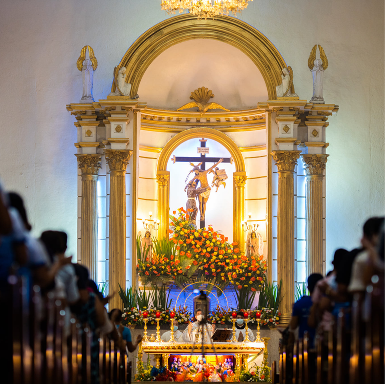

WHAT MADE US SPECIAL
NARRA STORY
The name "Naga" is believed to have originated from the word narra, a type of hardwood tree known for its strength and resilience. This name was inspired by the abundance of narra trees that once flourished in the area, shaping not only the physical landscape but also the identity of the community. These trees, deeply valued for their durability and beauty, symbolized the steadfast spirit of Naga's early settlers. Over time, the name "Naga" became more than just a reference to its natural environment—it grew to embody the city's enduring strength, cultural richness, and historical significance. Today, while modern development has transformed Naga into an industrial hub, its name serves as a living reminder of its roots, connecting its present progress to the natural and cultural heritage of its past.
Naga City deeply values faith, resilience, and unity, which are the cornerstones of its identity as a community. These values reflect the city's strong sense of togetherness and deep cultural heritage, nurtured over centuries of shared history and tradition. Faith plays a central role in the lives of its people, evident in the enduring devotion to St. Francis of Assisi, the city's patron saint, and the vibrant celebrations of religious festivals that bring residents together in joyful harmony. Resilience, on the other hand, defines the spirit of Naga's people, who have faced challenges with unwavering determination and strength. This characteristic has allowed the city to thrive as an industrial hub while preserving its rich cultural and natural treasures. Unity ties it all together, fostering a harmonious community where traditions blend seamlessly with modern progress. Guided by a commitment to inclusivity and collaboration, the city continually seeks to create an environment where people can grow and succeed while cherishing their shared heritage.
BELIEFS
BARANGAYS
Naga City is composed of 28 barangays, each playing a vital role in shaping the city's vibrant culture and dynamic development. These barangays are more than just administrative divisions; they are the lifeblood of the city's governance and community life. Each barangay has its own unique character, traditions, and contributions, creating a mosaic of diversity that strengthens the city as a whole. From the bustling coastal barangays that thrive on trade and fishing to the serene upland communities known for their natural beauty and agricultural practices, every barangay brings something distinct to Naga's identity. Together, they serve as the foundation of a unified yet diverse city, fostering progress while preserving the rich heritage and close-knit spirit that Naga City is known for.